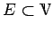
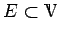

Inhalt Index DeskTop Bronstein

 Funktionalanalysis Vektorräume Lineare und affin-lineare Teilmengen
Funktionalanalysis Vektorräume Lineare und affin-lineare Teilmengen


Der Durchschnitt einer beliebigen Anzahl linearer Teilräume in  ist wiederum ein linearer Teilraum. Demzufolge existiert für jede nichtleere Teilmenge  ein kleinster linearer Teilraum lin(E) oder [E] in , der E enthält, nämlich der Durchschnitt aller linearen Teilräume, in denen E enthalten ist. Die Menge lin(E) heißt lineare Hülle der Menge
ist wiederum ein linearer Teilraum. Demzufolge existiert für jede nichtleere Teilmenge  ein kleinster linearer Teilraum lin(E) oder [E] in , der E enthält, nämlich der Durchschnitt aller linearen Teilräume, in denen E enthalten ist. Die Menge lin(E) heißt lineare Hülle der Menge  . Sie ist mit der Menge aller (endlichen) Linearkombinationen
. Sie ist mit der Menge aller (endlichen) Linearkombinationen
| (12.10) |
die aus Elementen und Skalaren gebildet werden, identisch.